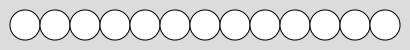
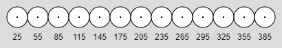
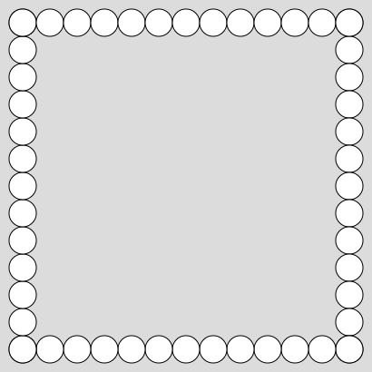
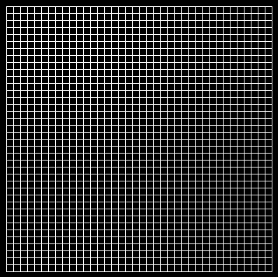
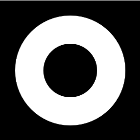
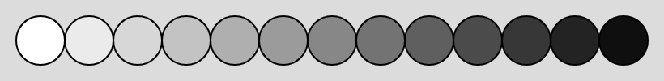
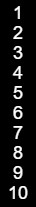
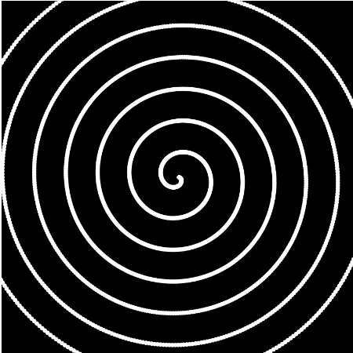

Quick Patterns with For Loops
Using for Loops
So far we've been relying on the repetition of the draw() function to create repetitive designs that can be modeled using a number pattern.
For example, drawing a line of circles:

Each of these circles has a different x value that falls into a specific pattern.

- The initial value is 25
- Each circle's x is 30 pixels larger than the previous one
- The largest x is 385
Open the Circle Frame workspace in CodeHS, where a variable has been set up to represent this number pattern:
let x;
function setup() {
createCanvas(410, 50);
x = 25; //Initialization
background(220);
}
function draw() {
if( x <= 385 ){ //Permissive if statement
fill(255);
circle(x,25,30)
}
x+=30; //Incremental Step
}
Problem: Too Slowwwww
We're relying on drawing one circle per frame, but it takes 13 frames to draw all of the circles. While a dramatic reveal is nice, we simply want all of the circles to appear during the first draw cycle. This will require
The for Loop
The for loop is a way to process through an entire number pattern as fast as possible. This way we can draw every single circle the first time that draw comes around and they will all be displayed.
A for loop has a structure similar to an if statement, but the parentheses are a little scary. To generate the number pattern above, we would use the following loop:
for (let x = 25; x <= 385; x += 30) {
}
A for loop has three sections, separated by semicolons. Each of these has a different purpose in the loop. Look at the three statements individually, they are identical to the three important lines in our previous pattern.
let x = 25; The first section of a for loop is about initialization. This is where we declare our variable and set its first value
x <= 385 The second section is the permissive boolean statement. Just like above, as long as it is true, the loop will continue.
x += 30 The third section is all about the incremental change that should be made to the variable each time to make a pattern.
Using this for loop, we can make the draw() function draw all 13 circles in the first frame, eliminating the 'gradual reveal' that our programs have had so far.
function setup() {
createCanvas(410, 50);
}
function draw() {
background(220);
for ( let x = 25; x <= 385; x += 30 ) {
fill(255);
circle(x, 25, 30)
}
}
Your Task: Frame

Start with the above code to start, but modify the height of the canvas to be 410. This will give you enough room to make the entire frame.
The original line of circles was drawn by using a fixed y of 25, and drawing every x from 25 through 385. You can modify the original loop's strategy to help produce the other four sides:
- The circles on the bottom have the same x values, but their y values are 385 instead of 25.
- The circles on the left have a fixed x value of 25, and the y values range from 25 to 385
- The circles on the right have a fixed x value of 385, and the y values range from 25 to 385
For Loop Patterns
Open the 'The for Loop' workspace
There you are met with a simple program that uses a for loop to output numbers to the console
//for( Initialization; Permissive Boolean; Step)
for( let i = 0; i < 10; i++)
{
console.log( i );
}
The provided code is a simple loop that will log its values to the console.
Looking at the loop, you can see that the pattern starts at zero ( let i = 0 ), increases by one each step ( i++ ) and continues until it hits nine ( i < 10 ).
Run the program and confirm that the values 0 through 9 appear in the console.
Your Task: For Loops Questions
Take the 'For Loops Questions' quiz in CodeHS
The questions there ask you to determine the pattern that a for loop is producing. Do the best to answer on your own, but this workspace may be used to test.
Updating Old Programs
We have done many assignments that use a number pattern to help generate a drawing, but they all require the draw() function to be called many times before the design is finished. The for loop is a much better choice to get the whole thing done at once.
Today's exercises will have you looking back at the number patterns your old programs were using, and designing a for loop that will replicate the same pattern. In the end, the programs that used to take a few seconds to complete should now be drawn instantly.
Your new versions will no longer have any global variables that grow slowly. Instead everything should be handled using a for loop within the draw function, similar to how the Circle Frame program was.
Quicker Grid

 In the previous assignment you were asked to create a grid using a number pattern. For this sketch you will be making the same grid, but using a for loop to make the entire grid appear right away. If you need inspiration, go look at your previous submission and think about:
In the previous assignment you were asked to create a grid using a number pattern. For this sketch you will be making the same grid, but using a for loop to make the entire grid appear right away. If you need inspiration, go look at your previous submission and think about:
- What is the initial value of your variable?
- How much does it increase by each time?
- How does your if statement stop it from looping forever?
The three sections of the for loop will look very similar to how you've done it there, but all contained in the loop header.
Quicker Circle Ring

The previous version of the Circle Ring program drew bigger and bigger hollow circles to form a doughnut. Since we relied on the draw() function to help, it was slow.
Like you did with the Grid program, look at your previous Circle Ring program and look at the variable you created that represents the size of each circle being drawn.
- What is the initial value of your variable?
- How much does it increase by each time?
- How does your if statement stop it from looping forever?
Once you know this information, rewrite the Circle Ring program to use a for-loop to draw all the circles in at once. This means that we will no longer see it 'grow' like in the previous version. The loop will cause the whole thing to be drawn at once.
Multiple Number Patterns
The original for loop demo used a loop to represent the x values that a series of circles were to be drawn at.
function setup() {
createCanvas(410, 50);
}
function draw() {
background(220);
for (let x = 25; x <= 385; x += 30) {
fill(255);
circle(x, 25, 30)
}
}
Right now the fill(255) is making sure that all the circles are white, but what if we wanted them each to have a slightly different color, fading from white to black.

This situation has two different number patterns happening simultaneously: one for the x location of each circle, and one for the fill value. The fill value should start at 255, but each circle's fill should be 20 lower.
To represent this, we should not use global variables. We need one that is created and updated similarly to the x variable.
Consider the solution below.
function setup() {
createCanvas(410, 50);
}
function draw() {
background(220);
let f = 255; //Create and initialize before the loop
for (var x = 25; x <= 385; x += 30) {
fill( f );
circle(x, 25, 30);
f -= 20; //Decrease by 20 each time the loop iterates
}
}
The f variable is created and initialized to 255 right before the loop begins. To make each circle have a different fill, the f variable is decreased by 20 right before each loop ends, causing the next circle to be darker.
Quick Number List

Your task is to create a version of Number List that uses a loop to draw all the numbers at once.
The two changing variables are the y location of the number and the number itself. Like before, design your for loop to control one value and use a separate number pattern to control the other.
Quick Spiral

Create a copy of your spiral generator program and name it 'Quick Spiral'.
The previous version had two variables following a number pattern: an angle and a radius that each start small and increase for a long time before filling the screen. Rewrite it to use a for loop to do a similar process, but all at once.
Note: if you choose the angle as your looping variable, keep in mind that the angle will go well beyond 360. It increases by another 360 each time it circles around the center.